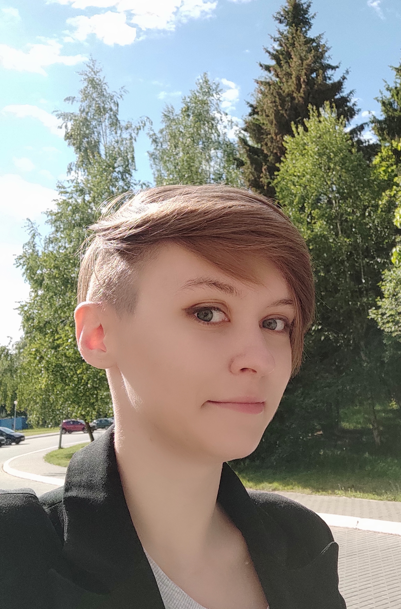

Natallia Kacharhina
28.08.1997
Contacts
+375 29 501 41 97
Minsk, Belarus
natkoch09@gmail.com
Discord: Natallia @P1lanetA
Summary
I want to obtain a challenging position where I can maximize my analytical skills, research and writing abilities. organizational and interpersonal skills to make a positive contribution to an organization.
Skills
- JavaScript Basics (in progress)
- HTML5, CSS3 (in progress)
- Git, GitHub
- VS Code
Secondary:
- Microsoft Office
- IBM SPSS Statistics
- Jira
- Data Visualization: Excel, Google Sheets
- Research and Analytical Skills
- Problem Solving
- Work with big amounts of data
Education
International Sakharov Environmental Institute of Belarusian State University, Minsk, Belarus – bachelor - Ecologist-expert
SEPTEMBER 2014 – JUNE 2018
Languages
- English - fluent EF SET English Certificate 84/100 (C2 Proficient)
- German - basic
- Russian - native
- Belarusian - native
Code example
function multiply (a, b) {
return a * b
};
Completed projects
My CVWork experience
Scientific practical center of hygiene
Minsk, Belarus
Specialist at Radiation Safety laboratory
JANUARY 2019 – PRESENT
- Scientific projects planning, drafting and execution within the framework of state scientific and technical programs (preparation of such documentation as: technical assignment, calendar plan, feasibility study, etc.)
- Working under commercial contracts, supervising co-executors and contractors Development of norms and regulation in the field of radiation protection of the public of the Republic of Belarus
- Implementation in the Republic of Belarus of the international Technical Cooperation Project of the International Atomic Energy Agency (IAEA) BYE9023 «Improving the Competence of the Regulatory Body and its Technical Support System at the Stage of Nuclear Power Plant Commissioning and Operation»
- Organization of seminars and advanced training courses under the auspices of the IAEA Participation in the IAEA international events, training courses and regional meetings, including speeches
- Assessment of possible consequences of the radiation accidents at a nuclear power plants using JRODOS software (Java-based Realtime Online Decision Support System)
- Participated in numerous national drills as a member of Crisis Center of the Ministry of Health of the Republic of Belarus